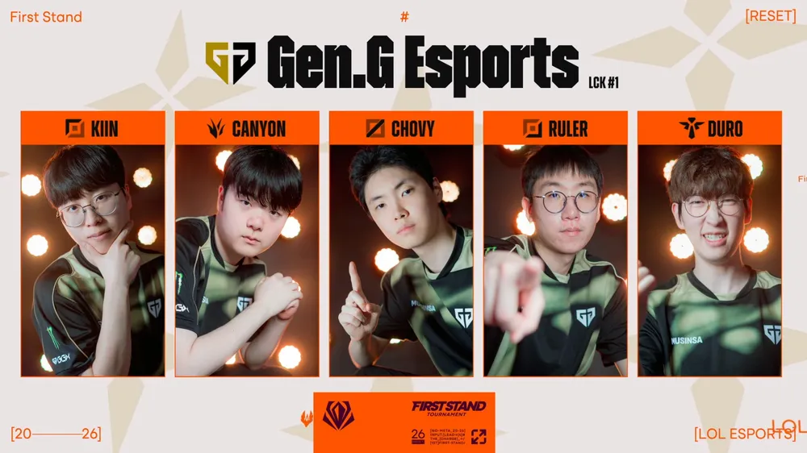
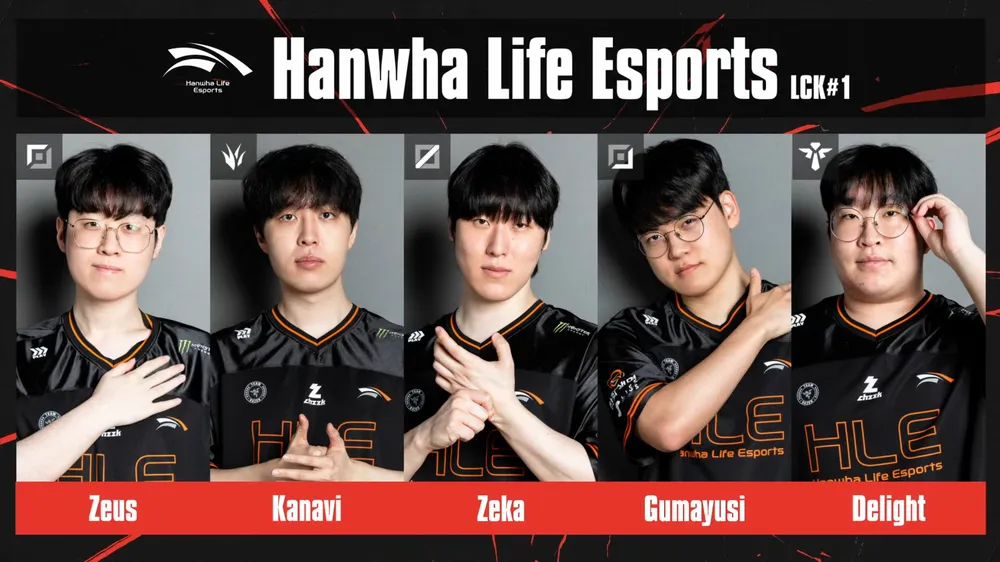
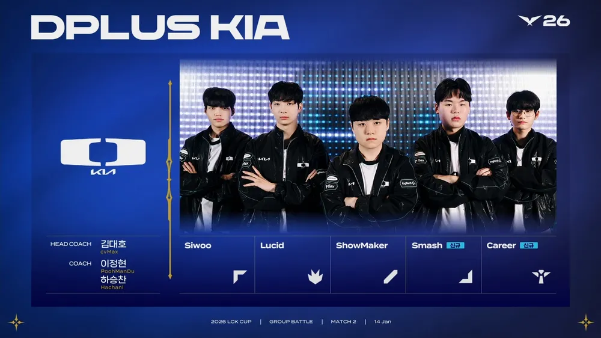
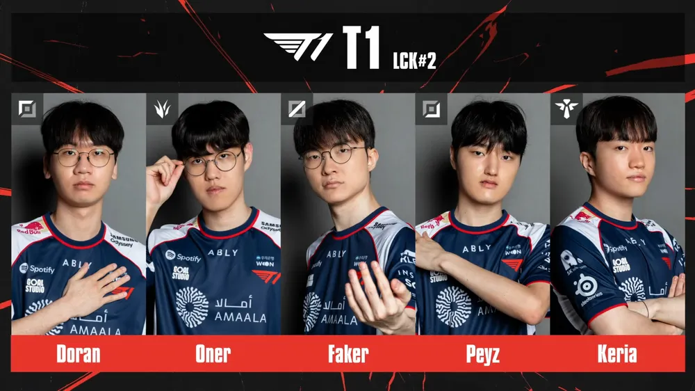

기인 쵸비 듀로 성불
룰러 캐니언 2번째 월즈 우승

제우스 3번째 월즈 우승
카나비 딜라이트 성불
제카 2번째 월즈 우승
구마유시 4번째 월즈 우승, 세계 최초 월즈 4연패 달성

시우 루시드 스메쉬 커리어 성불
쇼메이커 2020 DK 이후 2번째 우승

도란 2번째 월즈 우승
페이즈 성불
케리아 오너 4번째 월즈 우승
페이커 세계 최초 월즈 7회 우승 달성
케리아 페이커 오너 세계 최초 월즈 4연패 달성
번외: 7성 사이다 광고 찍을수 있음
4팀 다 서사가 한가득 하다
최근 플옵 4라 때는 또 잘하긴 하더라 미드가 문제였음